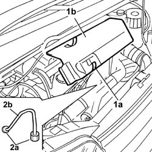

1060F34 LINES TO INJECTORS - R R
- Path
- Procedures > 10 ENGINE UNIT > 1060 DIESEL INJECTION SYSTEM > 1060F INJECTORS AND LINES > 1060F34 LINES TO INJECTORS - R R
- Kind
- repair procedure (removal / refitting; the operation number is the code)
- Applies to
- engines: 2.0 JTD 8V, 2.3 JTD 16V, 2.8 JTD 8V; all production periods
- Interactive page
- https://sloeber94.github.io/elrnDB-fDct/en/#/244000839
Applies to: engines: 2.3 JTD 16V; all production periods
See in Op. 1060F36
Applies to: engines: 2.8 JTD 8V; all production periods
 Removing
Removing
 Refitting
RefittingSee in Op. 1048B22
See in Op. 1048B14
1. Working on the fastening springs (1a) remove the sound insulation cover inspection flap (1b).
2. Undo the connectors (2a) and remove the fuel supply pipe to the injectors (2b).

Applies to: engines: 2.8 JTD 8V; all production periods
Refitting
Removing- Fit the fuel pipe in place.
- Tighten the connectors checking the torque.
 | Value - daNm | Fastening | Component | Ø |
|---|---|---|---|---|
. | (Manifold end) 2.6 - 3.2 | Connector | PIPE FUEL MANIFOLD TO INJECTORS | M14 |
| Value - daNm | Fastening | Component | Ø |
|---|---|---|---|---|
. | (Injector end) 1.9 -2.3 | Connector | PIPE FUEL MANIFOLD TO INJECTORS | M12 |
- Fit the inspection cover and secure it using the springs.
See in Op. 1048B14
See in Op. 1048B22
Applies to: engines: 2.0 JTD 8V; all production periods
See in Op. 1060F36